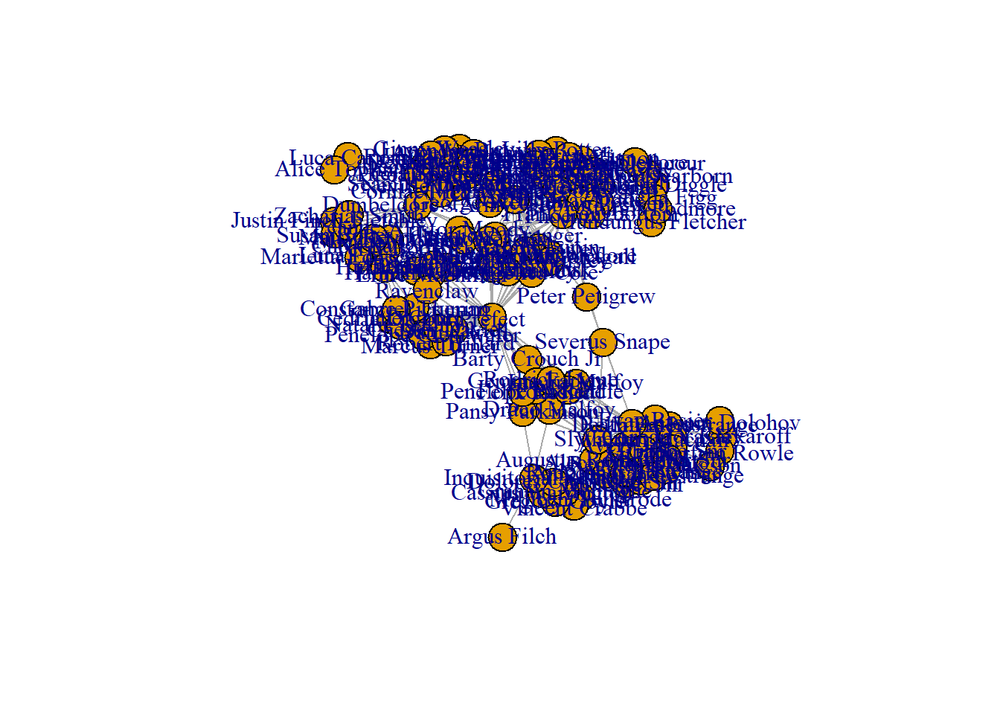
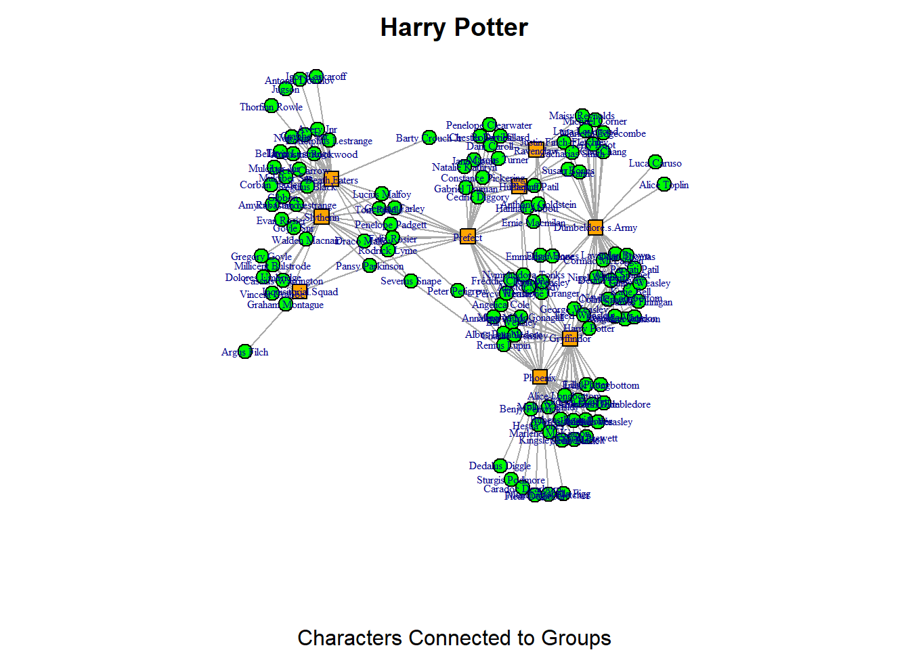
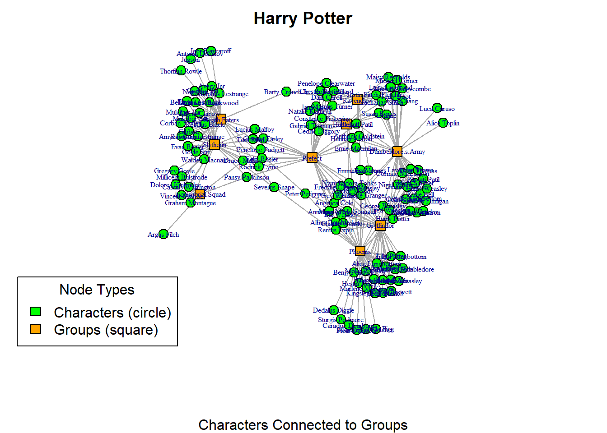
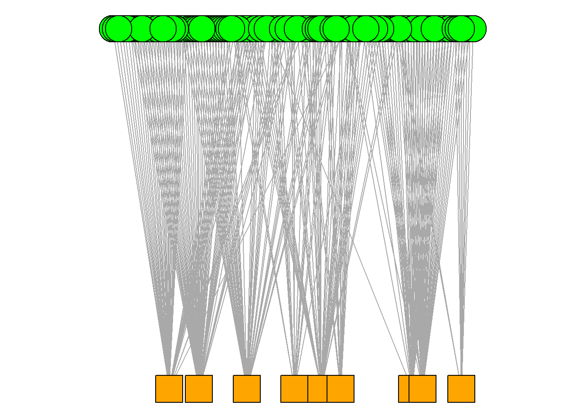

library(igraph)
library(ADAPTSNA)5 Clean Visuals - Two Mode
Social network data can be one mode or two mode. So far we have dealt with one mode network data. This means that one type of node is connected to the same type of node. Individuals connected to other individuals. We can also measure networks where there are two types of node. Let’s say individuals connected to groups that they participate in.
5.1 Getting to Know the Data
For this and the next chapter we will use some unique data where individuals are connected to groups. Specifically, this dataset demosntrates characters from the Harry Potter books auhtored by J.K. Rowling who are connected to various groups across the serries.
I identified various groups from the series and then researched which characters are participants in the groups. For example, I googled “list of prefects at hogwarts.” Same for phoenix, death eaters etc. Most of the info came from this site - https://harrypotter.fandom.com/wiki/Dumbledore%27s_Army. I then checked each person on google to see what house they were in - some are missing and NA because they are fake characters from the movies or the wiki page. I then structured these into an adjacency matrix and an edgelist. In this chapter, we work on adjacecny matrices. We will deal with the rest in the next chapter.
hp <- load_data("Harry Potter_Two_Mode_AM.csv", row.names=1)
hp_mat <- as.matrix(hp)
head(hp_mat) Phoenix Dumbeldore.s.Army Death.Eaters Inquisitorial.Squad
Albus Dumbledore 1 0 0 0
Remus Lupin 1 0 0 0
Molly Weasley 1 0 0 0
Siruis Black 1 0 0 0
Severus Snape 1 0 1 0
Alastor Moody 1 0 0 0
Prefect Gryffindor Ravenclaw Hufflepuff Slytherin
Albus Dumbledore 1 1 0 0 0
Remus Lupin 1 1 0 0 0
Molly Weasley 0 1 0 0 0
Siruis Black 0 1 0 0 0
Severus Snape 0 0 0 0 1
Alastor Moody 0 0 0 1 05.2 Two Mode Adjacency Matrices
So, here we have a two mode adjacency matrix. You will notice some things that are similar to you, perhaps the 1/0 nature of a matrix. But this is slightly different. The columns no longer reflect the same names as the rows. Now, instead of an i,j matrix we have an i,g (group) matrix. This means that there is no diagonal. Why? Well, because the names at the top of the matrix (columns) are different from the side (rows). Here then, i is sending to the group. Rather, we talk about this, usually, in terms of affiliation. So, i is affiliated with the group (or not).
For R to understand this is a two mode network matrix, we use a slightly different command than a regular matrix. graph_from_biadjacency_matrix() is the current function where R recognises the separate column names as one type of node and the row names as another. For this to truly be a two mode network, they have to be distinct.
hp_aff <- graph_from_biadjacency_matrix(hp_mat)
plot(hp_aff)
Looking at this plot, you can’t tell if it is a one more or a two mode network since the nodes all look exactly the same. There are a few things we need to do in order to make this clearer.
5.3 Visualising Two Mode Networks
Let’s make the visualisation much clearer between the two types of nodes.
I do this by changing the shape and the colour of each type of node. I set a vector with the colours and shapes I want
shapes <- c("circle", "square")
colors <-c("green", "orange")Then we can plot them based on these design parameters
par(mar =c(5,0,2,0))
set.seed(123)
plot(hp_aff, vertex.color=colors[V(hp_aff)$type+1],
vertex.shape=shapes[V(hp_aff)$type+1], vertex.label.cex = 0.5, vertex.size = 7, main = "Harry Potter", sub = "Characters Connected to Groups")
Here, I tell R to use the indices I’ve defined in the shapes and colors vectors and apply those to the network using the vertex.shape and vertex.color arguments. Notice that I need to state type + 1 in both of these arguments. It might look a bit unusual at first, but it makes sense once we take a closer look at what R does behind the scenes.
The “type” vertex characteristic is stored as TRUE or FALSE. You can verify this by running the code V(hp_aff)$type. This will display a long list of TRUE and FALSE values, which are stored in R as logical values: TRUE is equivalent to 1, and FALSE is equivalent to 0. Meanwhile, the index values for our shapes and colors vectors are stored differently. R always starts indexing at 1. In our colors vector, “green” is stored at index 1 and “orange” at index 2. For the shapes vector, “circle” is stored at index 1 and “square” at index 2.
Thus, there’s a mismatch between how the “type” characteristic is stored (as 1/0) and the way the shapes and colors vectors are indexed (which start from 1). To fix this, we add +1 to the type values, so that FALSE (which is stored as 0) becomes 1, and TRUE (which is stored as 1) becomes 2.
In this network, the second mode (which represents the “groups” in the bipartite network) is always considered to be the “TRUE” type. So, this means that the “characters” (the first mode, FALSE or 0) are displayed with green circles, and the “groups” (the second mode, TRUE or 1) are displayed with orange squares.
So, that visualisation was a lot better than the first! However, we can add a legend to the visualisation to further explain the network. You have to be mindful that some people may not see colours too well. So, differentiating the colours might not be so useful. Adding the legend on the plot can help orient people a little more to the visualisation you are presenting. Here we repeat the code from above to reproduce the plot. Then, you can use the legend() function to further explain the plot.
par(mar =c(5,1,2,1)) # set the margins of the plot window so it all fits
set.seed(123) # set the seed to replicate the visualisation
plot(hp_aff, vertex.color=colors[V(hp_aff)$type+1],
vertex.shape=shapes[V(hp_aff)$type+1], vertex.label.cex = 0.5, vertex.size = 7, main = "Harry Potter", sub = "Characters Connected to Groups")
legend("bottomleft",
legend = c("Characters (circle)", "Groups (square)"),
fill = c("green", "orange"),
title = "Node Types") # add a key for interpretation
This visualisation is great, but, we can do even more to emphasise the the bipartite (two-mode) nature of the network. Igraph has a specific layout option that can help emphasise this. Pay attention to the layout option below.
par(mar =c(0,0,0,0))
plot(hp_aff, vertex.color=colors[V(hp_aff)$type+1],
vertex.shape=shapes[V(hp_aff)$type+1], vertex.label = NA, layout = layout_as_bipartite(hp_aff))